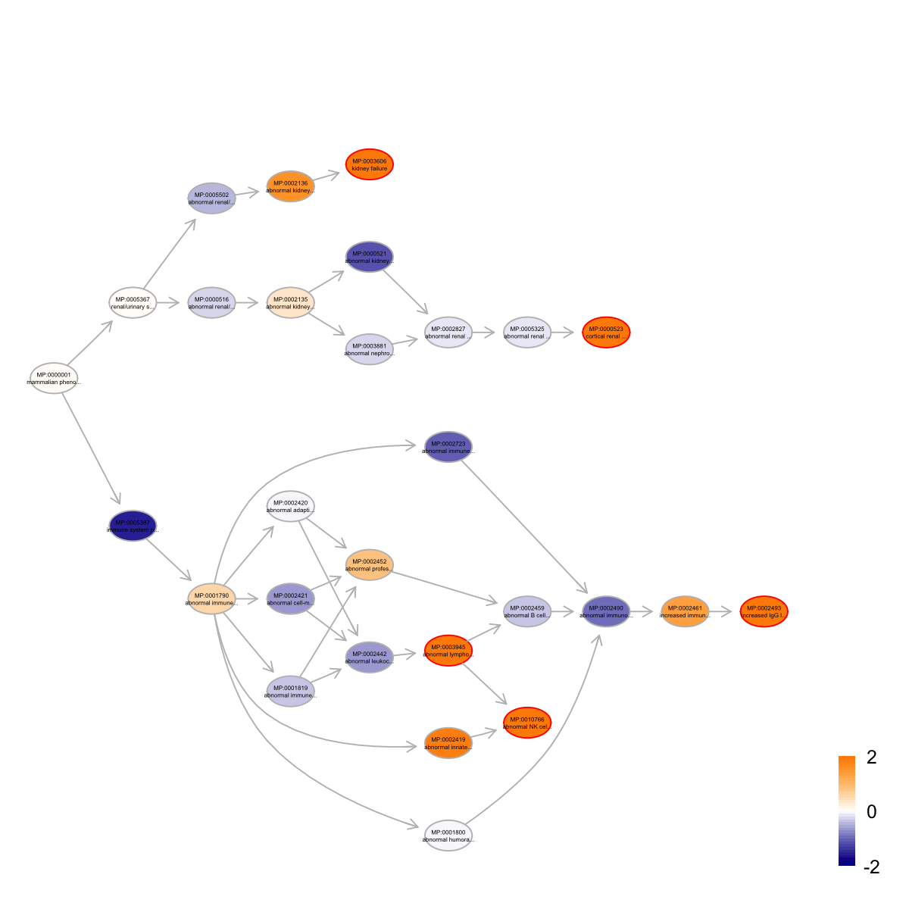

dEnricher is supposed to conduct enrichment analysis
given the input data and the ontology in query. It returns
an object of class "eTerm". Enrichment analysis is based on
either Fisher's exact test or Hypergeometric test. The test
can respect the hierarchy of the ontology.
dEnricher(data, identity = c("symbol", "entrez"), check.symbol.identity = FALSE,
genome = c("Hs", "Mm", "Rn", "Gg", "Ce", "Dm", "Da", "At"), ontology = c("GOBP",
"GOMF", "GOCC", "PS", "DO", "HPPA", "HPMI", "HPON", "MP", "MsigdbC1", "MsigdbC2CGP",
"MsigdbC2CP", "MsigdbC2KEGG", "MsigdbC2REACTOME", "MsigdbC2BIOCARTA", "MsigdbC3TFT",
"MsigdbC3MIR", "MsigdbC4CGN", "MsigdbC4CM", "MsigdbC5BP", "MsigdbC5MF", "MsigdbC5CC",
"MsigdbC6", "MsigdbC7"), sizeRange = c(10, 1000), which_distance = NULL,
test = c("FisherTest", "HypergeoTest", "BinomialTest"), p.adjust.method = c("BH",
"BY", "bonferroni", "holm", "hochberg", "hommel"), ontology.algorithm = c("none",
"pc", "elim", "lea"), elim.pvalue = 0.01, lea.depth = 2, verbose = T, RData.location = "http://dnet.r-forge.r-project.org/data")
RData.location=".". Surely, the location can be
anywhere as long as the user provides the correct path
pointing to (otherwise, the script will have to remote
download each time). Here is the UNIX command for
downloading all RData files (preserving the directory
structure): wget -r -l2 -A "*.RData" -np -nH
--cut-dirs=0 "http://dnet.r-forge.r-project.org/data"an object of class "eTerm", a list with following components:
set_info: a matrix of
nSet X 4 containing gene set information, where nSet is the
number of gene set in consideration, and the 4 columns are
"setID" (i.e. "Term ID"), "name" (i.e. "Term Name"),
"namespace" and "distance" gs: a list of gene
sets, each storing gene members. Always, gene sets are
identified by "setID" and gene members identified by
"Entrez ID" data: a vector containing input
data in consideration. It is not always the same as the
input data as only those mappable are retained
pvalue: a vector containing p-values
adjp: a vector containing adjusted p-values.
It is the p value but after being adjusted for multiple
comparisons call: the call that produced this
result The interpretation of the algorithms used to account for the hierarchy of the ontology:
#\dontrun{ load(url("http://dnet.r-forge.r-project.org/data/Datasets/Hiratani_TableS1.RData")) data <- rownames(RT)[1:1000] eTerm <- dEnricher(data, identity="symbol", genome="Mm", ontology="MP", RData.location="./RData_Rd")Start at 2014-04-05 20:18:20 First, load the ontology MP and its gene associations in the genome Mm (2014-04-05 20:18:20) ... Load Enterz Gene information from http://dnet.r-forge.r-project.org/data/Mm/org.Mm.eg.RData Load annotation information from http://dnet.r-forge.r-project.org/data/Mm/org.Mm.egMP.RData Then, do mapping based on symbol (2014-04-05 20:18:22) ... Among 1000 symbols of input data, there are 853 mappable via official gene symbols but 147 left unmappable Third, perform enrichment analysis using FisherTest (2014-04-05 20:18:22) ... There are 4519 terms being used, each restricted within [10,1000] annotations Last, adjust the p-values using the BH method (2014-04-05 20:18:25) ... End at 2014-04-05 20:18:25 Runtime in total is: 5 secseTerm <- dEnricher(data, identity="symbol", genome="Mm", ontology="MP", ontology.algorithm="pc", RData.location="./RData_Rd")Start at 2014-04-05 20:18:25 First, load the ontology MP and its gene associations in the genome Mm (2014-04-05 20:18:25) ... Load Enterz Gene information from http://dnet.r-forge.r-project.org/data/Mm/org.Mm.eg.RData Load annotation information from http://dnet.r-forge.r-project.org/data/Mm/org.Mm.egMP.RData Then, do mapping based on symbol (2014-04-05 20:18:27) ... Among 1000 symbols of input data, there are 853 mappable via official gene symbols but 147 left unmappable Third, perform enrichment analysis using FisherTest based on pc algorithm to respect ontology structure (2014-04-05 20:18:27) ... Load ontology information from http://dnet.r-forge.r-project.org/data/Obo/ig.MP.RData There are 4609 terms being used At level 15, there are 4 nodes/terms At level 14, there are 19 nodes/terms At level 13, there are 43 nodes/terms At level 12, there are 93 nodes/terms At level 11, there are 143 nodes/terms At level 10, there are 227 nodes/terms At level 9, there are 373 nodes/terms At level 8, there are 640 nodes/terms At level 7, there are 865 nodes/terms At level 6, there are 918 nodes/terms At level 5, there are 820 nodes/terms At level 4, there are 364 nodes/terms At level 3, there are 70 nodes/terms At level 2, there are 29 nodes/terms Last, adjust the p-values using the BH method (2014-04-05 20:18:57) ... End at 2014-04-05 20:18:57 Runtime in total is: 32 secseTerm <- dEnricher(data, identity="symbol", genome="Mm", ontology="MP", ontology.algorithm="elim", RData.location="./RData_Rd")Start at 2014-04-05 20:18:57 First, load the ontology MP and its gene associations in the genome Mm (2014-04-05 20:18:57) ... Load Enterz Gene information from http://dnet.r-forge.r-project.org/data/Mm/org.Mm.eg.RData Load annotation information from http://dnet.r-forge.r-project.org/data/Mm/org.Mm.egMP.RData Then, do mapping based on symbol (2014-04-05 20:19:02) ... Among 1000 symbols of input data, there are 853 mappable via official gene symbols but 147 left unmappable Third, perform enrichment analysis using FisherTest based on elim algorithm to respect ontology structure (2014-04-05 20:19:03) ... Load ontology information from http://dnet.r-forge.r-project.org/data/Obo/ig.MP.RData There are 4609 terms being used At level 15, there are 4 nodes/terms: so far, a total of 0 nodes called significant, and 0 ancestral nodes changed (0 genes eliminated) At level 14, there are 19 nodes/terms: so far, a total of 0 nodes called significant, and 0 ancestral nodes changed (0 genes eliminated) At level 13, there are 43 nodes/terms: so far, a total of 2 nodes called significant, and 44 ancestral nodes changed (243 genes eliminated) At level 12, there are 93 nodes/terms: so far, a total of 3 nodes called significant, and 50 ancestral nodes changed (284 genes eliminated) At level 11, there are 143 nodes/terms: so far, a total of 6 nodes called significant, and 58 ancestral nodes changed (380 genes eliminated) At level 10, there are 227 nodes/terms: so far, a total of 9 nodes called significant, and 78 ancestral nodes changed (505 genes eliminated) At level 9, there are 373 nodes/terms: so far, a total of 19 nodes called significant, and 123 ancestral nodes changed (822 genes eliminated) At level 8, there are 640 nodes/terms: so far, a total of 26 nodes called significant, and 153 ancestral nodes changed (1020 genes eliminated) At level 7, there are 865 nodes/terms: so far, a total of 39 nodes called significant, and 197 ancestral nodes changed (1516 genes eliminated) At level 6, there are 918 nodes/terms: so far, a total of 47 nodes called significant, and 211 ancestral nodes changed (2071 genes eliminated) At level 5, there are 820 nodes/terms: so far, a total of 59 nodes called significant, and 219 ancestral nodes changed (2683 genes eliminated) At level 4, there are 364 nodes/terms: so far, a total of 60 nodes called significant, and 220 ancestral nodes changed (2731 genes eliminated) At level 3, there are 70 nodes/terms: so far, a total of 62 nodes called significant, and 221 ancestral nodes changed (5196 genes eliminated) At level 2, there are 29 nodes/terms: so far, a total of 62 nodes called significant, and 221 ancestral nodes changed (5196 genes eliminated) At level 1, there are 1 nodes/terms: so far, a total of 62 nodes called significant, and 221 ancestral nodes changed (5196 genes eliminated) Last, adjust the p-values using the BH method (2014-04-05 20:19:23) ... End at 2014-04-05 20:19:23 Runtime in total is: 26 secseTerm <- dEnricher(data, identity="symbol", genome="Mm", ontology="MP", ontology.algorithm="lea", RData.location="./RData_Rd")Start at 2014-04-05 20:19:23 First, load the ontology MP and its gene associations in the genome Mm (2014-04-05 20:19:23) ... Load Enterz Gene information from http://dnet.r-forge.r-project.org/data/Mm/org.Mm.eg.RData Load annotation information from http://dnet.r-forge.r-project.org/data/Mm/org.Mm.egMP.RData Then, do mapping based on symbol (2014-04-05 20:19:24) ... Among 1000 symbols of input data, there are 853 mappable via official gene symbols but 147 left unmappable Third, perform enrichment analysis using FisherTest based on lea algorithm to respect ontology structure (2014-04-05 20:19:25) ... Load ontology information from http://dnet.r-forge.r-project.org/data/Obo/ig.MP.RData There are 4609 terms being used At level 15, there are 4 nodes/terms and 0 being recalculated At level 14, there are 19 nodes/terms and 2 being recalculated At level 13, there are 43 nodes/terms and 5 being recalculated At level 12, there are 93 nodes/terms and 19 being recalculated At level 11, there are 143 nodes/terms and 42 being recalculated At level 10, there are 227 nodes/terms and 51 being recalculated At level 9, there are 373 nodes/terms and 85 being recalculated At level 8, there are 640 nodes/terms and 128 being recalculated At level 7, there are 865 nodes/terms and 224 being recalculated At level 6, there are 918 nodes/terms and 284 being recalculated At level 5, there are 820 nodes/terms and 309 being recalculated At level 4, there are 364 nodes/terms and 215 being recalculated At level 3, there are 70 nodes/terms and 57 being recalculated At level 2, there are 29 nodes/terms and 23 being recalculated At level 1, there are 1 nodes/terms and 1 being recalculated Last, adjust the p-values using the BH method (2014-04-05 20:19:52) ... End at 2014-04-05 20:19:52 Runtime in total is: 29 secscbind(eTerm$set_info[which(eTerm$pvalue < 1e-3), c(1,2)], eTerm$pvalue[which(eTerm$pvalue < 1e-3)])setID name MP:0000520 MP:0000520 absent kidney MP:0000743 MP:0000743 muscle spasm MP:0001327 MP:0001327 decreased retinal photoreceptor cell number MP:0001970 MP:0001970 abnormal pain threshold MP:0002268 MP:0002268 abnormal terminal bronchiole morphology MP:0002625 MP:0002625 heart left ventricle hypertrophy MP:0002896 MP:0002896 abnormal bone mineralization MP:0002966 MP:0002966 decreased circulating alkaline phosphatase level MP:0003015 MP:0003015 abnormal circulating bicarbonate level MP:0003073 MP:0003073 abnormal metacarpal bone morphology MP:0003290 MP:0003290 intestinal hypoperistalsis MP:0008084 MP:0008084 absent single-positive T cells MP:0008101 MP:0008101 lymph node hypoplasia MP:0008586 MP:0008586 disorganized photoreceptor outer segment MP:0011059 MP:0011059 abnormal ependyma motile cilium morphology MP:0011117 MP:0011117 abnormal susceptibility to weight gain MP:0011241 MP:0011241 abnormal fetal derived definitive erythrocyte cell number MP:0011368 MP:0011368 increased kidney apoptosis eTerm$pvalue[which(eTerm$pvalue < 0.001)] MP:0000520 3.708892e-05 MP:0000743 1.131583e-04 MP:0001327 3.248387e-05 MP:0001970 9.439912e-06 MP:0002268 2.822217e-04 MP:0002625 9.706980e-04 MP:0002896 4.101757e-04 MP:0002966 6.874354e-06 MP:0003015 1.430607e-04 MP:0003073 6.741427e-06 MP:0003290 7.911911e-05 MP:0008084 2.195097e-04 MP:0008101 9.097551e-04 MP:0008586 3.380702e-04 MP:0011059 7.727206e-04 MP:0011117 3.931322e-04 MP:0011241 1.670333e-05 MP:0011368 5.674676e-04# highlight the top significant terms and also color-code all terms according to the adjust p-values load(url("http://dnet.r-forge.r-project.org/data/Obo/ig.MP.RData")) g <- ig.MP nodes_query <- names(sort(eTerm$adjp)[1:5]) nodes.highlight <- rep("red", length(nodes_query)) names(nodes.highlight) <- nodes_query subg <- dDAGinduce(g, nodes_query) visDAG(g=subg, data=-1*log10(eTerm$adjp[V(subg)$name]), node.info="both", zlim=c(0,2), node.attrs=list(color=nodes.highlight))#}
dEnricher
Fang H, Gough J. (2014) DNET: dynamic networks via integrative analysis of network, expression, evolution and ontology data. R package version 1.0.0. http://dnet.r-forge.r-project.org
){kind=link}